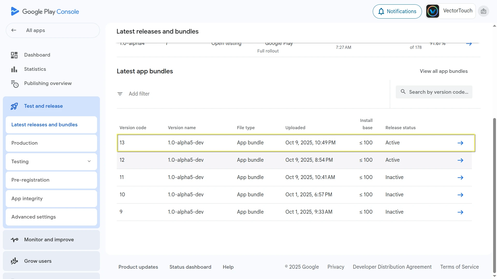
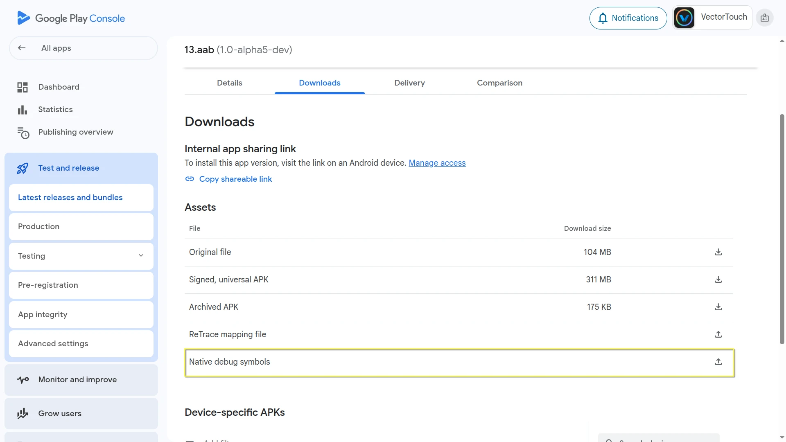
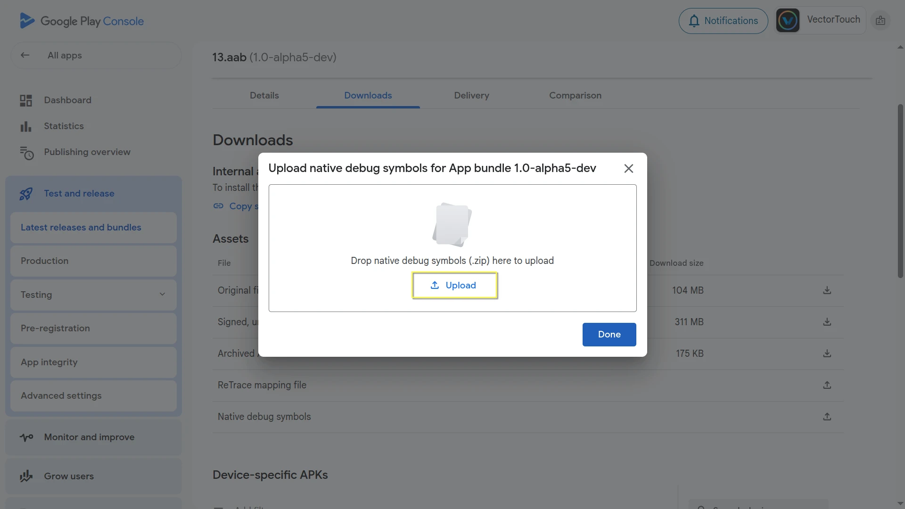
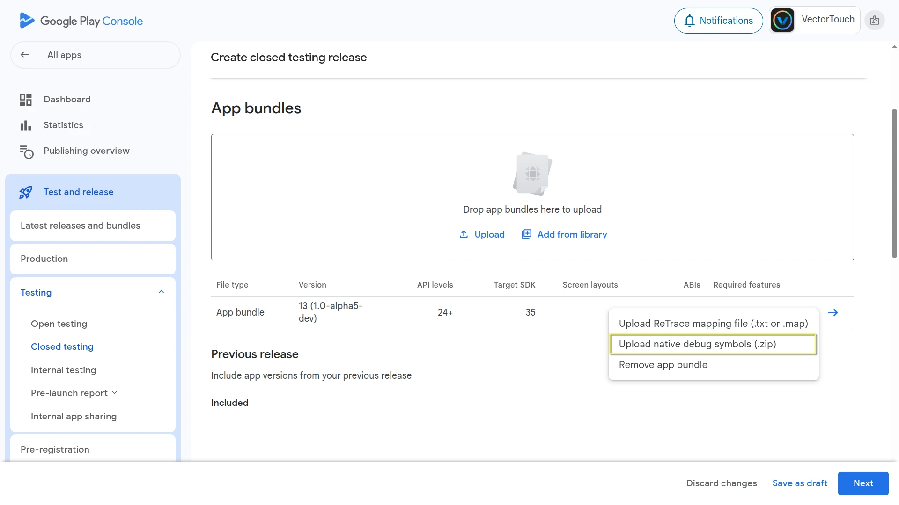

Xử lý crash trên Android
Khi game của bạn bị crash trên Android, bạn thường thấy các stack trace bị làm rối (obfuscated) trong Play Console hoặc các công cụ báo cáo crash khác như Firebase Crashlytics. Để các stack trace này dễ đọc với con người (symbolicated), bạn cần các native debug symbol tương ứng với bản build đã xuất của game.
Godot giờ cung cấp native debug symbol có thể tải xuống cho mỗi export template chính thức.
Lấy native debug symbol cho template chính thức
Các tệp native debug symbol được cung cấp cho mọi bản phát hành ổn định của Godot và có thể tải xuống từ trang phát hành trên GitHub.
Ví dụ, để lấy native debug symbol cho phiên bản 4.5.1.stable:
Tải xuống tệp phát hành
Godot_native_debug_symbols.4.5.1.stable.template_release.android.zip
Lấy native debug symbol cho bản build tùy chỉnh
Template đã xuất và native debug symbol của nó phải đến từ cùng một bản build, nên bạn chỉ có thể dùng symbol chính thức nếu đang dùng export template chính thức. Nếu bạn build export template tùy chỉnh, bạn cần tự tạo các tệp symbol tương ứng.
Để làm vậy, hãy thêm debug_symbols=yes separate_debug_symbols=yes vào lệnh build scons. Lệnh này sẽ tạo một tệp tên android-template-release-native-symbols.zip chứa native debug symbol cho bản build tùy chỉnh của bạn.
Ví dụ,
scons platform=android target=template_release debug_symbols=yes separate_debug_symbols=yes generate_android_binaries=yes
Nếu bạn build cho nhiều kiến trúc, bạn chỉ nên thêm separate_debug_symbols=yes vào lệnh build cuối cùng, tương tự cách dùng generate_android_binaries=yes.
scons platform=android arch=arm32 target=template_release debug_symbols=yes
scons platform=android arch=arm64 target=template_release debug_symbols=yes
scons platform=android arch=x86_32 target=template_release debug_symbols=yes
scons platform=android arch=x86_64 target=template_release debug_symbols=yes separate_debug_symbols=yes generate_android_binaries=yes
Tải symbol lên Google Play Console
Làm theo các bước sau để tải native debug symbol lên:
Mở Play Console.
Chọn một ứng dụng bất kỳ.
Ở menu bên trái, vào
Test and release > Latest releases and bundles.

Giờ hãy chọn bundle liên quan và mở nó.

Chọn tab
Downloadsvà cuộn xuống phầnAssets.

Bên cạnh
Native debug symbols, nhấp vào biểu tượng mũi tên tải lên.

Chọn và tải lên tệp native debug symbol tương ứng với phiên bản build đó.

Ngoài ra, bạn có thể tải symbol lên khi tạo bản phát hành mới:
Trên trang Create release, tìm bundle phát hành mới của bạn.

Nhấp vào menu ba chấm bên cạnh nó.
Chọn
Upload native debug symbols (.zip)từ menu.

Chọn và tải lên tệp native debug symbol tương ứng với phiên bản build đó.
Symbolicate log crash thủ công
Bạn cũng có thể symbolicate log crash thủ công bằng công cụ ndk-stack có trong Android NDK.
Ghi chú
Nếu đã cài Android SDK, bạn có thể tìm công cụ ndk-stack trong thư mục ndk tại vị trí SDK. Nếu chưa, bạn có thể tải NDK trực tiếp từ trang tải xuống NDK.
Giải nén tệp zip native debug symbol bạn đã tải xuống trước đó (hoặc đã tạo cùng bản build tùy chỉnh).
Lưu log crash vào một tệp văn bản (ví dụ,
crash.txt).
Quan trọng
ndk-stack tìm một dòng dấu sao mở đầu khi phân tích log crash. Hãy đảm bảo crash.txt của bạn bắt đầu bằng dòng sau:
*** *** *** *** *** *** *** *** *** *** *** *** *** *** *** ***
Chạy ndk-stack với đường dẫn tới thư mục symbol khớp với kiến trúc CPU của crash (ví dụ,
arm64-v8a):
ndk-stack -sym path/to/native_debug_symbols/arm64-v8a/ -dump crash.txt
Đầu ra sẽ hiển thị một trace đã được symbolicate, cho thấy tên tệp và số dòng trong mã nguồn Godot (hoặc bản build tùy chỉnh của bạn).